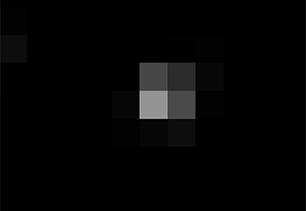
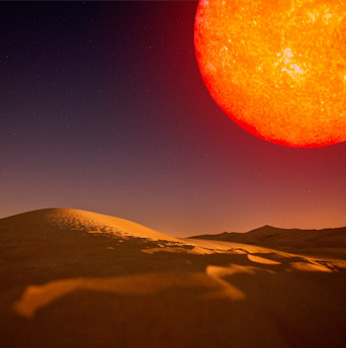
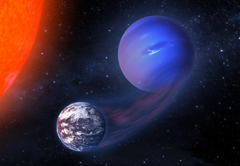
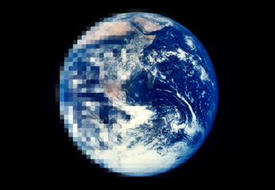

Janvi Madhani
astrophysics • cosmology • baker

Total Solar Eclipse eclipse shadow bands
Light data collected on the ground and at high altitude (above the atmosphere) before and
after totality of solar eclipse by use of a high altitude balloon. Shadow bands were visually and
quantitatively measured at both locations across 16 separate photo-diodes, implying that
their origin is not atmospheric in nature.
planetplanet dynamical code
Code for predicting and modeling planet-planet occultations, as well as
transit and secondary eclipse light curves, phase curves, mutual transits, and more.
pale green dot aurorae on proxima b
In this paper, I showed how auroral emission from the habitable zone planet Proxima Centauri b can be used
to characterize its orbital properties, its mass, and its atmospheric composition.

ACT searching for fast radio bursts in ACT data
I wrote a pipeline to search for Fast Radio Bursts in Atacama Cosmology Telescope data, which ended
up being exceptional at characterizing cosmic ray interactions instead. Featured image is a theoretical
model of a FRB hitting the detectors and the subsequent dispersion of photons.

trappist-1 search for planet h
I used data from K2 to confirm the period of TRAPPIST-1h, measure the rotation period of
the star, and establish that all seven planets in TRAPPIST-1 are in three-body Laplace
resonances.

mirage earths m dwarf water loss
In this paper, I showed how the extended pre-main sequence phase of M dwarfs can lead to
extreme water loss and the possible buildup of oxygen in the atmospheres
of terrestrial planets in the habitable zones of these stars.
about about rodrigo
I'm a Flatiron Fellow at the CCA in New York City, working on finding novel
ways to detect and characterize exoplanets, particularly those in the
habitable zone. I mainly work with light curves from the K2 mission,
and I'm gearing up to tackle science with TESS and JWST.
Outside the office I love to hike, bike, swim,
craft lattes, faulty parallelism, and oxford commas.

Theory Calculation exploring a linear expansion of the universe
Work in progress. Exploring the credibility of Fulvio Melia's theoretical cosmological model where
the scale factor a(t) expands linearly in time by finding an analytical solution of the CMB's polarization
in this modified cosmological model.

hecs habitable evaporated cores
The extended pre-main sequence phase of M dwarfs can drive vigorous hydrodynamic escape from
their planets. In this paper, I showed how in some cases, small, gas-rich planets can lose
their hydrogen envelopes and form HECs.

vplanet the virtual planet
VPLANET models the evolution of potentially habitable planets
from their formation to the present day, accounting for processes such as stellar evolution, atmospheric escape,
climate evolution, etc.
cortex reproducible science
This is a work in progress. I'm interested in developing ways to make science
papers open source, reproducible, and as transparent as possible. Check out
the github repo for more information.